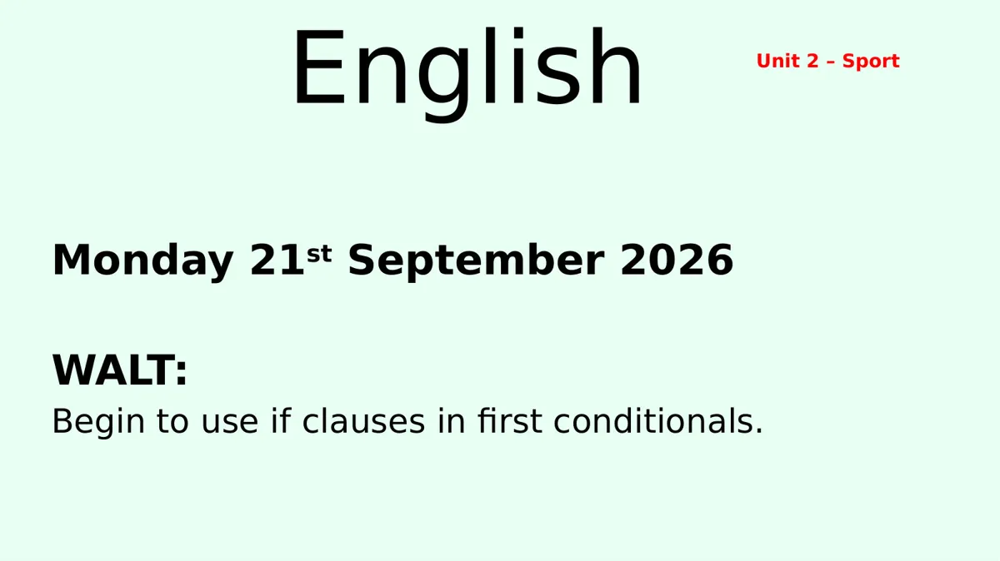
English
Monday 21st September 2026
WALT:
Begin to use if clauses in first conditionals.
Unit 2 – Sport
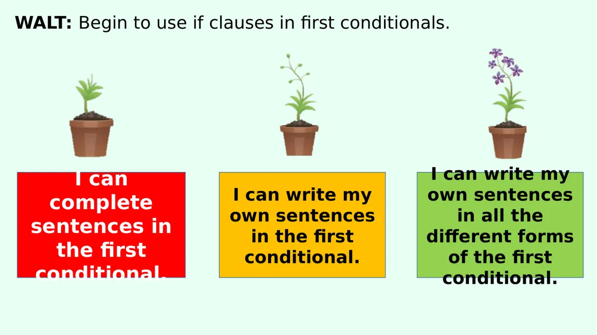
WALT: Begin to use if clauses in first conditionals.
I can write my
own sentences
in all the
different forms
of the first
conditional.
I can
complete
sentences in
the first
conditional.
I can write my
own sentences
in the first
conditional.
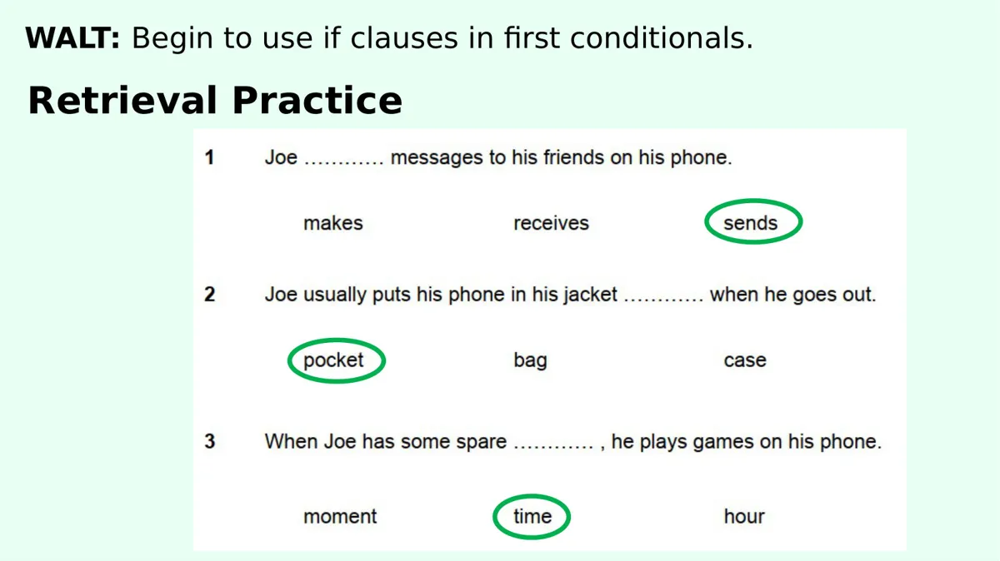
WALT: Begin to use if clauses in first conditionals.
Retrieval Practice
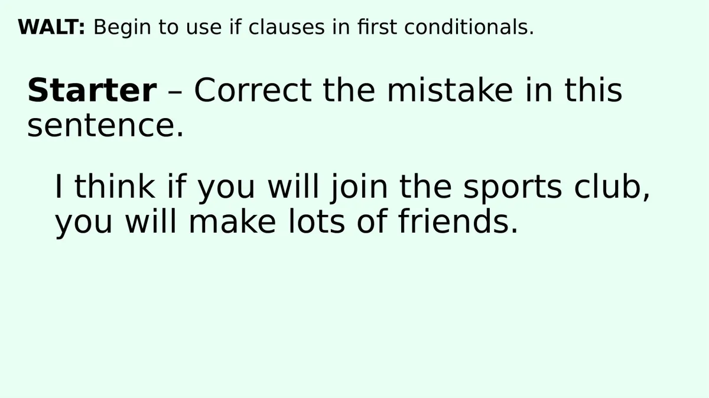
WALT: Begin to use if clauses in first conditionals.
Starter – Correct the mistake in this
sentence.
I think if you will join the sports club,
you will make lots of friends.
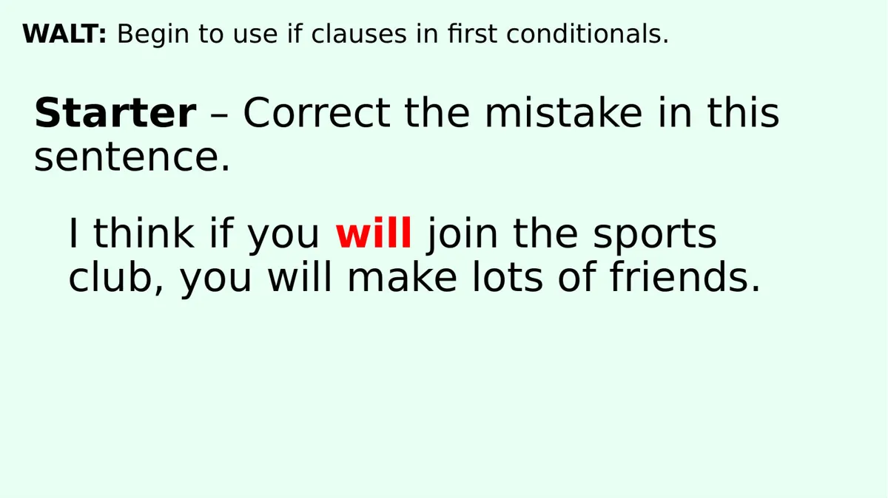
WALT: Begin to use if clauses in first conditionals.
Starter – Correct the mistake in this
sentence.
I think if you will join the sports
club, you will make lots of friends.
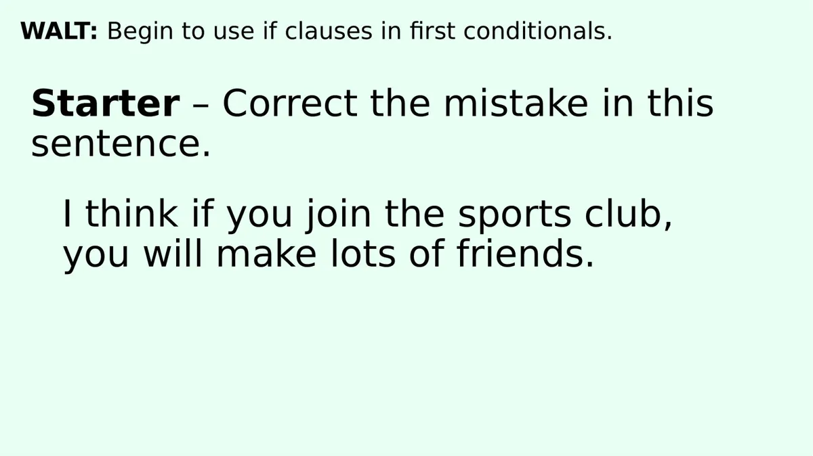
WALT: Begin to use if clauses in first conditionals.
Starter – Correct the mistake in this
sentence.
I think if you join the sports club,
you will make lots of friends.
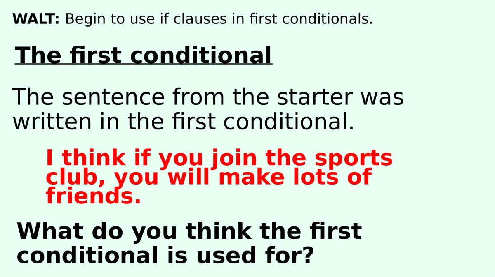
WALT: Begin to use if clauses in first conditionals.
The first conditional
The sentence from the starter was
written in the first conditional.
I think if you join the sports
club, you will make lots of
friends.
What do you think the first
conditional is used for?
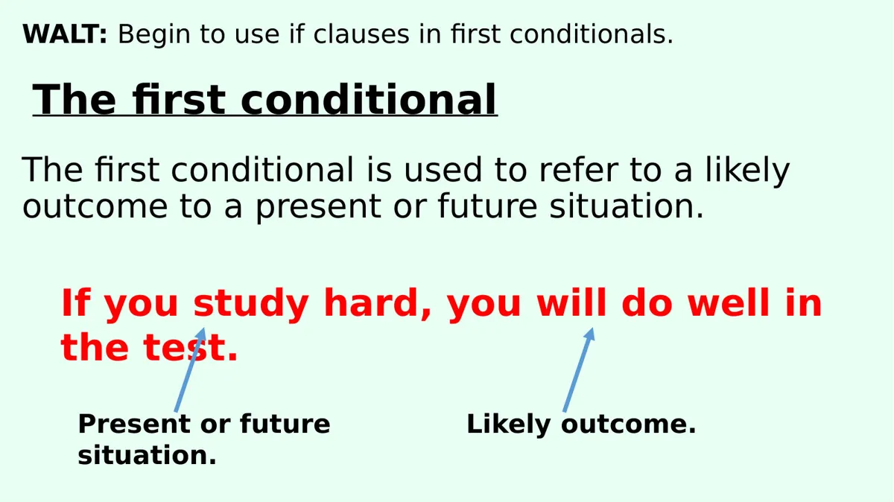
WALT: Begin to use if clauses in first conditionals.
The first conditional
The first conditional is used to refer to a likely
outcome to a present or future situation.
If you study hard, you will do well in
the test.
Present or future
situation.
Likely outcome.
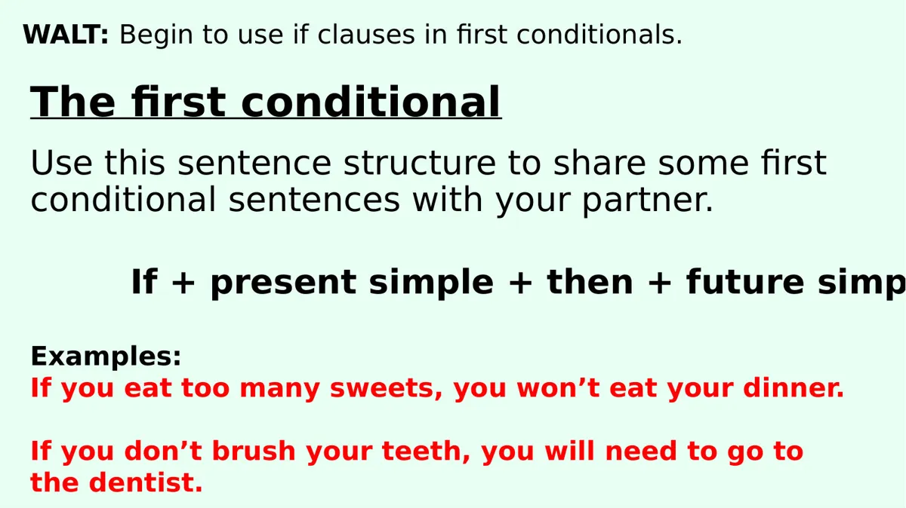
WALT: Begin to use if clauses in first conditionals.
The first conditional
Use this sentence structure to share some first
conditional sentences with your partner.
If + present simple + then + future simp
Examples:
If you eat too many sweets, you won’t eat your dinner.
If you don’t brush your teeth, you will need to go to
the dentist.
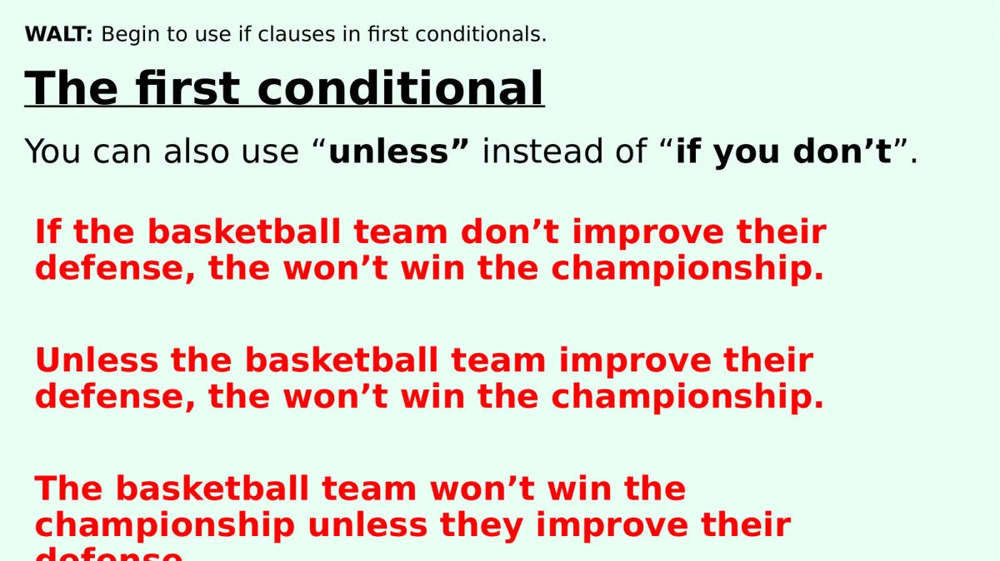
WALT: Begin to use if clauses in first conditionals.
The first conditional
You can also use “unless” instead of “if you don’t”.
If the basketball team don’t improve their
defense, the won’t win the championship.
Unless the basketball team improve their
defense, the won’t win the championship.
The basketball team won’t win the
championship unless they improve their
defense
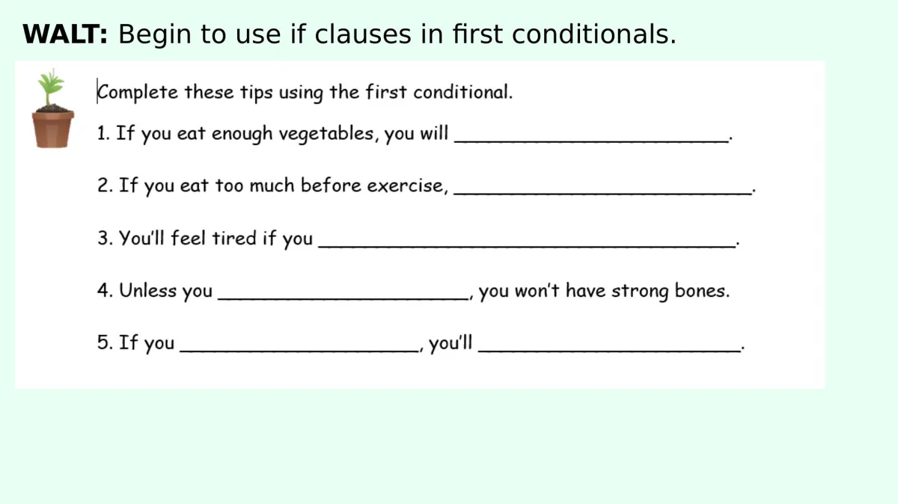
WALT: Begin to use if clauses in first conditionals.
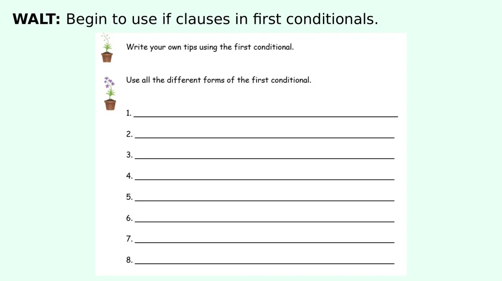
WALT: Begin to use if clauses in first conditionals.
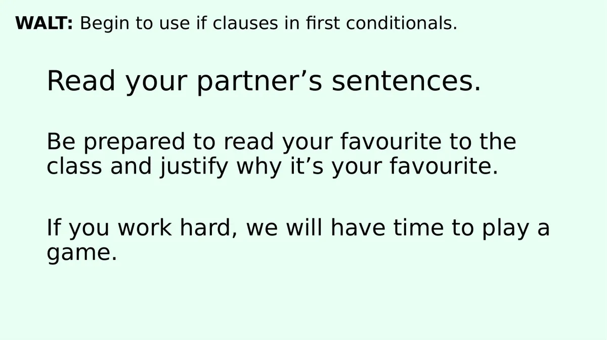
WALT: Begin to use if clauses in first conditionals.
Read your partner’s sentences.
Be prepared to read your favourite to the
class and justify why it’s your favourite.
If you work hard, we will have time to play a
game.